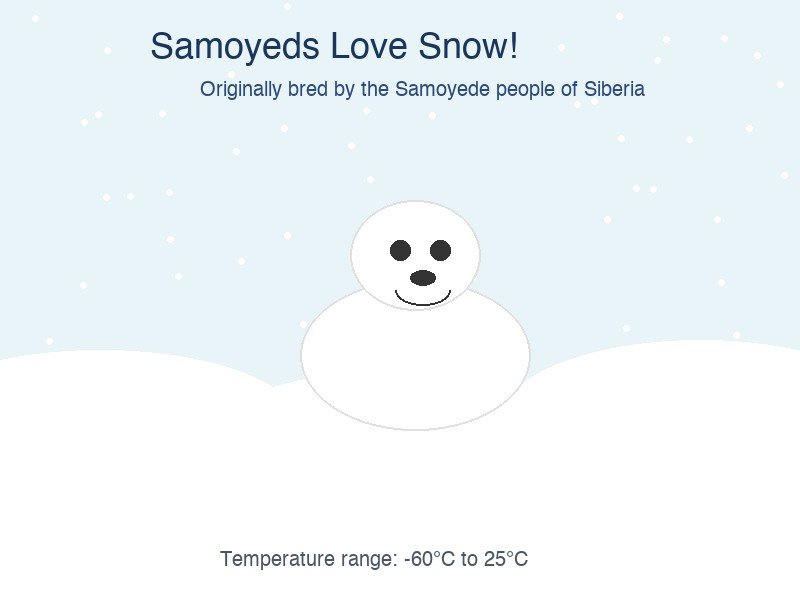
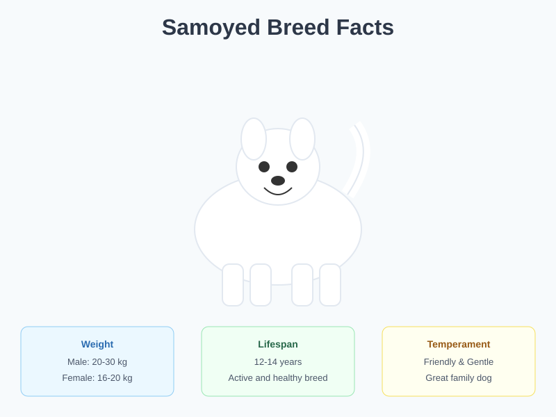

About the Samoyed
The Samoyed is a large herding dog breed that originated in Siberia. Known for their beautiful white coat and characteristic "Samoyed smile," these dogs were originally bred by the Samoyede people for herding reindeer, pulling sleds, and keeping their owners warm during cold Siberian nights.
Their friendly and gentle temperament makes them excellent family dogs. They are known for being particularly good with children and other pets, making them one of the most popular companion breeds worldwide.
Gallery

The Famous Samoyed Smile
The upturned corners of the Samoyed's mouth create their characteristic smile, which also prevents drooling in cold weather.

Born for Winter
With their thick double coat, Samoyeds thrive in cold weather and love playing in the snow.

Breed Quick Facts
Essential information about the Samoyed breed at a glance.

Community Events
Samoyed lovers around the world organize adoption events and meetups.
Breed Characteristics
Size
Males: 53-60 cm tall, 20-30 kg
Females: 48-53 cm tall, 16-20 kg
Coat
Dense, double-layered coat. White, cream, or biscuit colored. Requires regular grooming.
Temperament
Friendly, gentle, and adaptable. Excellent with children. Can be stubborn but eager to please.
Exercise Needs
Moderate to high. Needs at least 1-2 hours of exercise daily. Enjoys hiking, running, and pulling activities.
| Attribute | Rating | Notes |
|---|---|---|
| Friendliness | ★★★★★ | Extremely friendly with everyone |
| Energy Level | ★★★★☆ | Active but not hyperactive |
| Trainability | ★★★☆☆ | Intelligent but independent |
| Grooming Needs | ★★★★★ | High maintenance coat |
| Cold Tolerance | ★★★★★ | Thrives in cold climates |
| Heat Tolerance | ★★☆☆☆ | Sensitive to hot weather |
Care Guide
Grooming
Samoyeds have a magnificent double coat that requires consistent care. Brush your Samoyed at least 2-3 times per week, and daily during shedding season (known as "blowing coat"). Their white fur is surprisingly self-cleaning due to the coat's texture.
Nutrition
Feed your Samoyed a high-quality dog food appropriate for their age, size, and activity level. Adults typically need 2-3 cups of food per day, divided into two meals. Avoid overfeeding as Samoyeds can be prone to weight gain.
Health Considerations
- Hip dysplasia - regular screening recommended
- Progressive retinal atrophy - eye exams important
- Diabetes mellitus - monitor blood sugar
- Samoyed hereditary glomerulopathy - kidney condition
History and Origin
The Samoyed breed takes its name from the Samoyede people of Siberia, who relied on these dogs for survival in the harsh Arctic conditions. For thousands of years, these dogs served as herders, hunters, and sled dogs.
In the late 19th and early 20th centuries, Samoyeds were brought to England by Arctic explorers. The breed gained popularity quickly due to their striking appearance and gentle nature. Notable expeditions that used Samoyeds include Fridtjof Nansen's North Pole expedition in 1893 and Ernest Shackleton's Antarctic expedition.
Today, Samoyeds are primarily companion animals, though they still excel in activities like agility, herding trials, and sled dog racing. Their popularity continues to grow worldwide, with active breed communities in North America, Europe, and Asia.